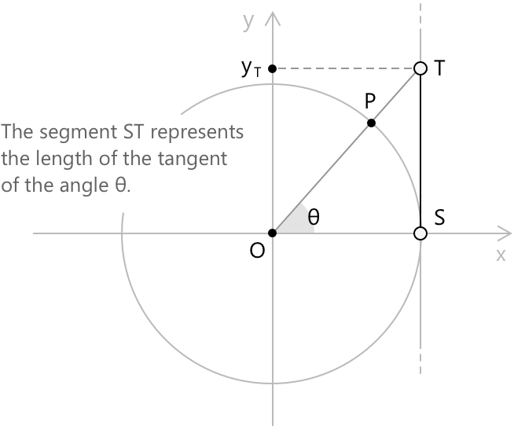
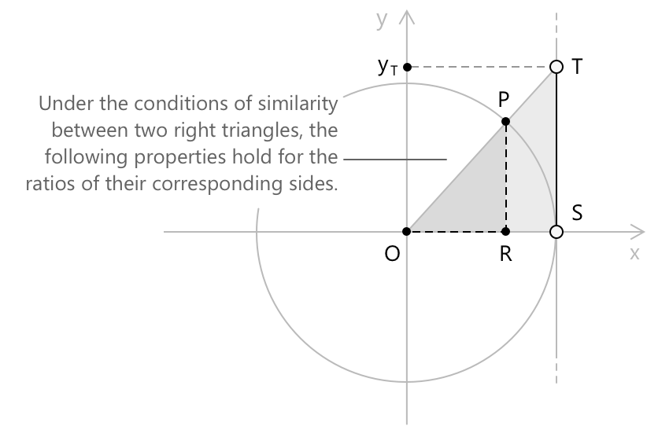
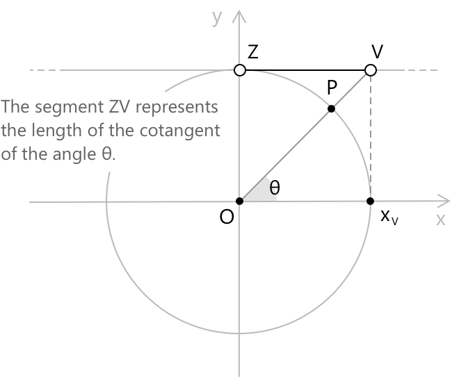
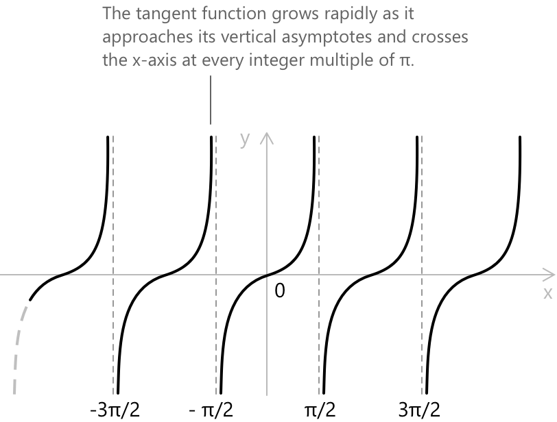
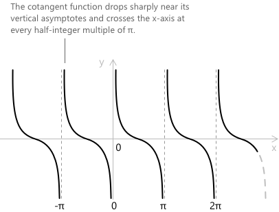

Тангенс та котангенс
Вступ
Тангенс і котангенс — це два тригонометричні відношення, що виводяться з синуса та косинуса. Для заданого орієнтованого кута \(\theta\), тангенс визначається як відношення синуса \(\theta\) до його косинуса, а котангенс — як обернене відношення:
\[ \tan(\theta) = \frac{\sin(\theta)}{\cos(\theta)} \qquad \cot(\theta) = \frac{\cos(\theta)}{\sin(\theta)} \]
Обидва мають точну геометричну інтерпретацію на одиниковому колі, де вони виглядають як знакові довжини відрізків, пов'язаних із кінцевою стороною кута. На відміну від синуса та косинуса, які визначені для кожного дійсного числа, тангенс і котангенс визначені не всюди: тангенс не визначений там, де косинус дорівнює нулю, а котангенс — там, де синус дорівнює нулю.
Тангенс
Розглянемо одиникове коло з центром у початку координат \(\text{O} = (0,0)\) і радіусом 1. Нехай \(\theta\) — кут у стандартному положенні, і позначимо \(\text{P}\) точку на колі, де кінцева сторона \(\theta\) перетинає його.
- Точка \(\text{S} = (1, 0)\) — це місце, де коло перетинає вертикальну пряму \(x = 1\). Пряма, що проходить через \(\text{S}\) перпендикулярно до осі \(x\), є дотичною до одиникового кола в точці \(\text{S}\).
- Продовжимо промінь з \(\text{O}\) через \(\text{P}\), поки він не перетне цю вертикальну дотичну в точці \(\text{T}\).
- Знакова довжина відрізка \(\overline{ST}\) визначає тангенс \(\theta\):
\[ \tan(\theta) = \overline{ST} \]

З означення випливає, що тригонометричний тангенс — це числове значення, що представляє відношення, тоді як геометричний тангенс — це пряма. Їх не слід плутати: тригонометричний тангенс кількісно визначає зв'язок між синусом і косинусом кута, тоді як геометричний тангенс — це пряма, що торкається кола рівно в одній точці.
Трикутники \(\text{OST}\) і \(\text{ORP}\) є подібними за побудовою. Їхня пропорційність дає:
\[ \frac{\overline{ST}}{\overline{OS}} = \frac{\overline{RP}}{\overline{OR}} \]

За означенням синуса та косинуса, маємо \(\overline{RP} = \sin(\theta)\) та \(\overline{OR} = \cos(\theta)\), отже:
\[ \tan(\theta) = \frac{\sin(\theta)}{\cos(\theta)} \]
Оскільки косинус дорівнює нулю при \(\theta = \dfrac{\pi}{2} + k\pi\) для кожного \(k \in \mathbb{Z}\), тангенс не визначений при цих значеннях:
\[ \tan(\theta) = \frac{\sin(\theta)}{\cos(\theta)} \qquad \theta \neq \frac{\pi}{2} + k\pi \quad k \in \mathbb{Z} \]
Поширені значення тангенса
У наступній таблиці зібрані значення \( \tan(x) \) для найчастіше зустрічається кутів, виражених у радіанах.
\[ \begin{align} x &= -\pi/3 &\quad& \tan(-\pi/3) = -\sqrt{3} \\[6pt] x &= -\pi/4 &\quad& \tan(-\pi/4) = -1 \\[6pt] x &= -\pi/6 &\quad& \tan(-\pi/6) = -1/\sqrt{3} \\[6pt] x &= 0 &\quad& \tan(0) = 0 \\[6pt] x &= \pi/6 &\quad& \tan(\pi/6) = 1/\sqrt{3} \\[6pt] x &= \pi/4 &\quad& \tan(\pi/4) = 1 \\[6pt] x &= \pi/3 &\quad& \tan(\pi/3) = \sqrt{3} \end{align} \]
Тригонометричні тотожності для тангенса
-
\[ \text{1.} \quad \tan(x+y) = \frac{\tan(x) + \tan(y)}{1 - \tan(x)\tan(y)} \]
-
\[ \text{2.} \quad \tan(x-y) = \frac{\tan(x) – \tan(y)}{1 + \tan(x)\tan(y)} \]
-
\[\text{3.} \quad \tan(2x) = \frac{2\,\tan(x)}{1 - \tan^{2}(x)} \]
-
\[ \text{4.} \quad \tan\left(\frac{x}{2}\right) = \frac{\sin x}{1 + \cos x} = \frac{1 – \cos x}{\sin x} \]
-
\[\text{5.} \quad 1 + \tan^{2}(x) = \sec^{2}(x)\]
-
\[\text{6.} \quad \tan(x)\,\cot(x) = 1\]
Ці тотожності описують поведінку тангенса при додаванні, відніманні, подвоєнні, половинному зменшенні кута та обернені зв'язках. Вони доповнюють тотожності для синуса та косинуса і є особливо корисними при спрощенні виразів або перетворенні тригонометричних рівнянь. Для ширшого огляду зверніться до повної збірки тригонометричних тотожностей.
Котангенс
Оберненим значенням до тангенса називають котангенс, який позначають \(\cot(\theta).\) Геометрично він відповідає знаковій довжині відрізка \(\overline{ZV}\), побудованого на горизонтальній дотичній лінії у верхній точці одиничного кола, аналогічно до побудови тангенса. Його можна виразити як:
\[ \cot(\theta) = \frac{1}{\tan(\theta)} = \frac{\cos(\theta)}{\sin(\theta)} = \overline{ZV} \]

Оскільки синус зникає при \(\theta = k\pi\) для кожного \(k \in \mathbb{Z}\), котангенс не визначений при цих значеннях:
\[ \cot(\theta) = \frac{\cos(\theta)}{\sin(\theta)} \qquad \theta \neq k\pi \quad k \in \mathbb{Z} \]
Основні значення котангенса
У наступній таблиці зібрано значення \( \cot(x) \) для найчастіше зустрічається кутів, виражених у радіанах.
\[ \begin{align} x &= -\pi/3 &\quad& \cot(-\pi/3) = -1/\sqrt{3} \\[6pt] x &= -\pi/4 &\quad& \cot(-\pi/4) = -1 \\[6pt] x &= -\pi/6 &\quad& \cot(-\pi/6) = -\sqrt{3} \\[6pt] x &= \pi/6 &\quad& \cot(\pi/6) = \sqrt{3} \\[6pt] x &= \pi/4 &\quad& \cot(\pi/4) = 1 \\[6pt] x &= \pi/3 &\quad& \cot(\pi/3) = 1/\sqrt{3} \end{align} \]
Тригонометричні тотожності для котангенса
- \[\text{1.} \quad \cot(x+y) = \frac{\cot(x)\cot(y) – 1}{\cot(x) + \cot(y)}\]
- \[\text{2.} \quad \cot(x-y) = \frac{\cot(x)\cot(y) + 1}{\cot(y) - \cot(x)}\]
- \[\text{3.} \quad \cot(2x) = \frac{\cot^{2}(x) - 1}{2\,\cot(x)} \]
- \[\text{4.} \quad \cot\left(\frac{x}{2}\right) = \frac{1 + \cos x}{\sin x}\]
- \[\text{5.} \quad 1 + \cot^{2}(x) = \csc^{2}(x)\]
Ці тотожності описують поведінку котангенса при додаванні, відніманні, подвоєнні, половинні кута, а також взаємозв'язки через обернені значення.
Функції тангенса та котангенса
Функція тангенса \(f(x) = \tan(x)\) кожному куту \(x\), вираженому в радіанах, присвоює відповідне значення тангенса. Її графіком є періодична крива з періодом \(\pi\), що перетинає горизонтальну вісь у кожній цілій кратній \(\pi\) та має вертикальні асимптоти при \(x = \pi/2 + k\pi\) для \(k \in \mathbb{Z}\), де косинус зникає. Область визначення \(\tan(x)\) складається з усіх дійсних чисел, крім цих значень, а її область значень — вся дійсна пряма.

- Область визначення: \( \left\{ x \in \mathbb{R} : x \neq \frac{\pi}{2} + k\pi \text{ для всіх } k \in \mathbb{Z} \right\} \)
- Область значень: \( y \in \mathbb{R} \)
- Періодичність: періодична за \( x \) з періодом \( \pi \)
- Парність: непарна, \( \tan(-x) = -\tan(x) \)
Функція котангенса \( f(x) = \cot(x) \) кожному куту \( x \), вираженому в радіанах, присвоює відповідне значення котангенса. Її графіком є періодична крива з періодом \( \pi \), що має вертикальні асимптоти при \( x = k\pi \) для \( k \in \mathbb{Z} \), де синус зникає. Область визначення виключає ці точки, а область значень — вся дійсна пряма.

- Область визначення: \( \left\{ x \in \mathbb{R} : x \neq k\pi \text{ для всіх } k \in \mathbb{Z} \right\} \)
- Область значень: \( y \in \mathbb{R} \)
- Періодичність: періодична за \( x \) з періодом \( \pi \)
- Парність: непарна, \( \cot(-x) = -\cot(x) \)
Тангенс і котангенс у комплексній області
У теорії комплексних чисел тангенс і котангенс природно виникають із тригонометричної форми комплексного числа. Будь-яке комплексне число \(z = a + bi\) можна записати як:
\[ z = r(\cos\theta + i\sin\theta) \]
де \(r = \sqrt{a^2+b^2}\) — модуль, а \(\theta\) — аргумент. У цьому представленні тангенс аргументу задовольняє рівності:
\[ \tan(\theta) = \frac{\sin(\theta)}{\cos(\theta)} = \frac{b/r}{a/r} = \frac{b}{a} \]
отже, тангенс аргументу комплексного числа збігається з відношенням його уявної частини до дійсної частини. Це є основою формули \(\theta = \arctan(b/a)\), що використовується для відновлення аргументу з декартових компонент \(z\).
Глибший зв'язок виявляється через показникову форму. За формулою Ейлера:
\[ e^{i\theta} = \cos\theta + i\sin\theta \]
можна виразити тангенс повністю через комплексні показникові функції:
\[ \tan(\theta) = \frac{\sin\theta}{\cos\theta} = \frac{e^{i\theta} – e^{-i\theta}}{i(e^{i\theta} + e^{-i\theta})} \]
Цей вираз відображає структуру гіперболічного тангенса, який визначається як \(\tanh(x) = (e^x – e^{-x})/(e^x + e^{-x})\), і показує, що вони пов'язані заміною \(x \to i\theta\):
\[ \tan(\theta) = -i\tanh(i\theta) \]
Ця тотожність відображає глибшу єдність між круговою та гіперболічною тригонометрією, обидві з яких виникають з одного показникового базису над комплексними числами.